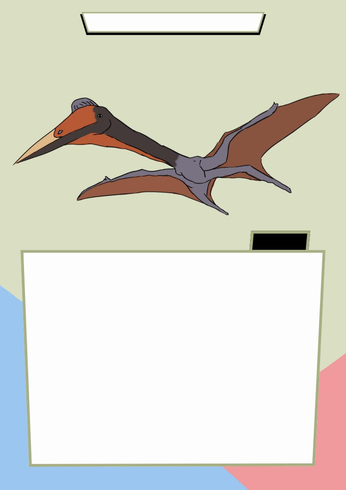

PTERSAURUS
FACT
Pterosaurs were flying relatives of the dinosaurs, although were not dinosaurs
t
hemselves. They were most likely warm-blooded active creatures, most of
which were capable of active flight (rather than just gliding). Pterosaurs came
i
n a wide variety of forms and sizes, from about the size of a pigeon up to the
l
argest flying creatures that have ever existed (about the size of a small
aeroplane). Their fossils are known from the Late Triassic until the very end of
t
he Cretaceous, a span of about 160 million years. IfArchaeopteryx is accepted
as a
t
r
ue bird, then birds still have about 15 million years before they can beat
t
his record. Pterosaurs became extinct at the end of the Cretaceous Period
about 65 million years ago along with most of their distant dinosaur relatives.
I
NTERESTINGFACTS: Pterosaurs were genuine fliers, able to flap or soar. Their
bodies were covered with fine hairs, so they were able to regulate their
t
emperature (they were warm-blooded). They are a close sister-group to the
dinosaurs, part of theArchosauria.